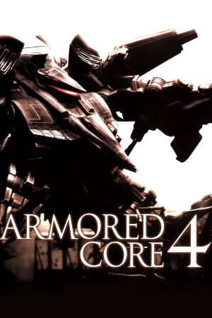

PlayStation 3, Xbox 360
Originally released in Japan on December 21st, 2006 for the PlayStation 3, Armored Core 4 was developed by FromSoftware and published by them in Japan, by Sega in North America on March 20th, 2007, and by 505 Games in Europe on June 22nd, 2007. An Xbox 360 version shipped alongside the PS3 in North America the same day. It was the first entry in the series built for high-definition consoles, and it marked a hard reboot of the franchise: the prior continuities, the Armored Core 1/2 era and the Armored Core 3 era, were dropped in favor of a fresh world built around a new cast, new corporations, and a redesigned aesthetic for the AC mechs.
The reboot brought sweeping gameplay changes. Boosting was overhauled into a Quick Boost system, a rapid energy-draining burst of speed, that made combat faster and more vertical than any previous entry, while a new "Primal Armor" shield mechanic tied defense directly to Kojima Particle energy management. Customization remained the heart of the game, with an expanded part list and a streamlined menu, and the story was told through a set of missions in a near-future world where corporate entities known as the Companies wage war using NEXT mechs piloted by specially gifted Lynx. Reception was mixed but generally positive, with critics praising the speed, visual upgrade, and depth of the assembly system while noting the short single-player campaign and a steeper learning curve.
Armored Core 4 set the template that its direct sequel, Armored Core: For Answer, refined, and it stands as an important bridge between the classic PS1/PS2 era and the modern era of the series that eventually culminated in Armored Core VI.
FromSoftware
- Official developer website.
Armored Core Wiki
- Contains lots of useful information about Armored Core games.
RPCS3 - The best PS3
emulator.
xenia - The best Xbox 360
emulator.
Armored Core 4 Manual (JP, PS3)
- PDF copy of the PS3 manual in Japanese.
Armored Core 4 Manual (JP, 360)
- PDF copy of the of the Xbox 360 manual in Japanese.
Steam Grid DB (AC4) - Contains lots of cool options for artwork that can be used in your Steam library.